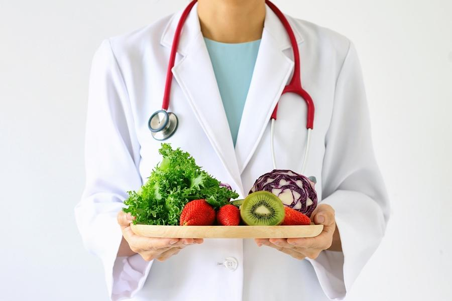
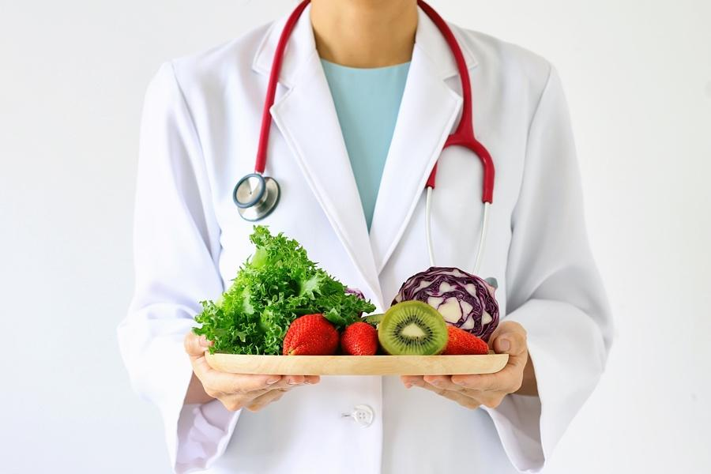

Veganismo Saludable
Sí, es posible. Una alimentación vegana equilibrada es saludable en todas las etapas de nuestras vidas
(incluyendo embarazo, lactancia, infancia y vejez) e incluso para deportistas. Así lo han demostrado
y afirmado expertos, como los de la Academia de Nutrición y Dietética, y muchos otros avales.

Aprende de Salud
Nutrientes
Usualmente hay dudas de dónde obtener ciertos nutrientes en una alimentación vegana.
Es posible! Aquí puedes revisar de dónde obtener los nutrientes críticos:
Avales
Sí, es posible. Una alimentación vegana equilibrada es saludable en todas las etapas de nuestras vidas (incluyendo embarazo, lactancia, infancia y vejez) e incluso para deportistas. Así lo han demostrado y afirmado expertos, como los de la Academia de Nutrición y Dietética, y muchos otros avales.

Aprende de Salud
Nutrientes
Usualmente hay dudas de dónde obtener ciertos nutrientes en una alimentación vegana. Es posible! Aquí puedes revisar de dónde obtener los nutrientes críticos: